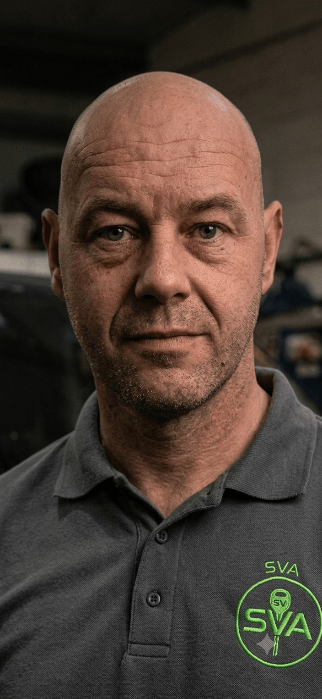

Your local, independent mobile vehicle locksmith serving Market Drayton and North Shropshire. From the town centre out to Hodnet, Loggerheads, and along the A53 corridor, our van brings dealer-grade key cutting, non-destructive vehicle opening, and transponder programming straight to your driveway or workplace.
No. We specialise in non-destructive vehicle entry. Using specialised precision tools like manual Lishi picks, we decode and pick the lock safely, leaving your vehicle, door mechanisms, and paintwork completely undamaged.
Yes. Our mobile workshop is equipped with dealer-level diagnostic and key programming machinery. We can cut keys and program new transponder chips directly from the van, whether you are on your driveway, at work or stranded at the roadside.
SVA Locksmiths will serve the wider Shropshire area, including Shrewsbury, Telford, Oswestry, Market Drayton, and Bridgnorth and Whitchurch. Because we are fully mobile, we come directly to your location.
Don't worry. An "All Keys Lost" scenario is completely manageable. We bypass the vehicle security, decode the lock profile to cut a brand new blade pattern, and then program a fresh chip into your car's ECU/Immobilizer module on-site.
Yes, absolutely. While our primary focus is automotive security, our mobile workshop is also fully equipped to cut and duplicate standard domestic house, cylinder, and mortice keys right on your driveway. If you need spare keys for your home, garage, or business while we are on-site, just let us know.
Yes. To maintain the highest standards of security, we must verify ownership before any work begins. Please ensure you have a valid photo ID and proof of vehicle connection—such as the V5C logbook, current insurance policy documents.
On some occasions and depending on the make, model and year of the car, we may need to remove modules from the car to enble us to decode and recode your brand new keys.
Prefer Direct Communication? Connect Instantly:
